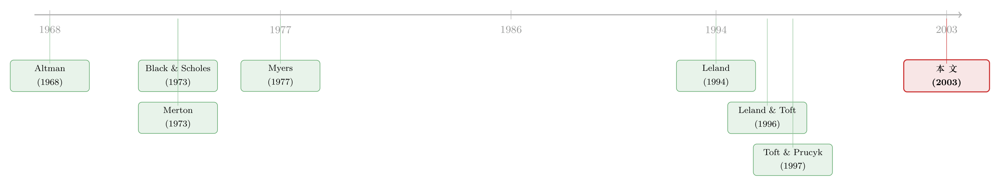

公司随时都可能倒下，期权定价却只盯着还债那一天
本文读的是 Brockman & Turtle (2003, Journal of Financial Economics)：他们指出，把股权看成一张写在公司资产上的「标准看涨期权」其实漏掉了一件根本的事——公司可以在任何一天被债权人「拔掉插头」，而不只是在到期还债那天。于是股权应当被定价为一份 向下敲出看涨期权 (down-and-out call, DOC)。用 7,787 个公司-年的数据反解，他们发现隐含障碍 (implied barrier) 平均高达资产市值的 0.6920，t 值高达 270，标准看涨模型被压倒性地否决；而且这套框架在破产预测上还能在多数情形下打败经典的 Altman Z 分数。
1 一个被忽略了三十年的常识
先从一个几乎人人都会背的结论说起。
自 Black 和 Scholes (1973) 那篇划时代的论文起，公司金融里有一句话被反复讲到几乎成了公理：股权就是一张写在公司资产上的看涨期权。资产价值 \(V\) 是标的，承诺偿还给债权人的金额 \(X\) 是执行价；到期那天，如果资产值多于负债，股东行权、把债还掉、拿走剩下的；如果资产不够还债，股东放弃行权，公司归债权人。简洁、优雅、可检验，这个洞见几乎重塑了整个公司金融。
可是，标准期权有一个你平时不会去多想的性质：它是 路径无关 (path-independent) 的。一张普通的看涨期权，无论标的资产在存续期间怎么上蹿下跳、跌得多惨，只要到期那一刻它在价内，它就照样值钱。换句话说，它在到期前永远「活着」。
接着，一个自然的问题是：公司也是这样吗？
显然不是。这正是本文要捅破的那层窗户纸。一家公司并不是只在还债日那几天才会破产；它随时可能因为违反债务契约、净值跌穿、被债权人催收、甚至一纸诉讼或监管处罚而被迫清算。一旦资产价值跌穿某个事先约定好的水平，股东的剩余索取权就被永久地、不可逆地抹掉了——哪怕第二天资产又神奇地涨了回来，那也与股东无关了，因为这家公司已经不归他了。
这就是路径无关与 路径依赖 (path-dependent) 的本质区别。标准看涨期权只看到期那一个时点；而公司股权的命运取决于资产价值走过的整条路径——只要中途碰过一次「地板」，游戏就结束了。
于是 Brockman 和 Turtle 的核心论点呼之欲出：股权不是一张标准看涨期权 (standard call, SC)，而是一张向下敲出看涨期权——存在一个障碍 \(H\)，资产价值一旦向下击穿它，期权立刻作废。
2 把股权写成一份「会被敲出」的期权
我们先把直觉翻译成资产负债表上的语言，这一步其实非常漂亮。
在传统视角里，债权人持有的是「无风险债 − 一份卖出的看跌期权」（这就是 Merton 结构模型里的风险债定价）。但在障碍框架下，本文给出了一个更细的分解：债权人持有的是无风险债、一份空头看跌期权、外加一份多头的向下敲入看涨期权 (down-and-in call, DIC)。
这份 DIC 是什么？它平时「冬眠」，只有当资产价值跌穿障碍 \(H\) 时才被激活，激活之后就变成一份普通看涨期权交到债权人手里。直觉上，它代表的是债权人「在资产进一步恶化之前提前拔掉插头、把家当收归己有」的权利。而一个零回扣的 DOC 加上一个零回扣的 DIC，恰好等于一份标准看涨期权 SC——这就是那条优美的恒等式：
$$\text{SC} = \text{DOC} + \text{DIC}.$$
读到这里，反转出现了：传统视角恰恰忽略了这份 DIC。如果你坚持用标准看涨期权 SC 给股权定价，你就等于把这份属于债权人的敲入看涨期权白白送给了股东。其后果是系统性的——高估了带杠杆公司的股权、低估了风险债，高估和低估的金额恰好就是那份被忽略的 DIC 的价值。这立刻引出一个可以拿到数据里去检验的命题：障碍是被市场定价的。
（关于结构模型给公司债定价时系统性的偏差，可参见《结构模型给债券定价，错的从来不是「太低」，而是「太散」》；关于债务契约背后的代理逻辑，可参见《债务这副药，为什么不能全吃？——重读 Jensen 和 Meckling 五十年》。）
3 障碍从哪里来
也许你会问：这个「障碍」是不是作者凭空想出来的一个数学摆设？
恰恰相反，它在现实里无处不在。最常见的障碍就是债权人与债务人之间的 债务契约 (covenants)：为了拿到融资，管理层承诺把某些财务比率（资产负债率、利息保障倍数等）维持在约定水平之上，还要接受对分红、资产处置、并购、再举债的种种限制。任何一条被违反，都可能触发债务催收、违约或破产。还有一类 正净值条款 (positive net worth agreements)，赋予债权人在资产市值跌穿负债时强制公司破产的权利。Leland (1994) 更进一步指出，短期债务的「滚动续作」本身就是一种隐性的正净值要求——到期还不上、滚不动，就等于触发了障碍。
更妙的是，这套框架对没有负债的公司同样成立：诉讼、监管违规、刑事处罚都能在任意时点把一家企业逼入清算。Brockman 和 Turtle 强调，DOC 框架并不依赖任何一国具体的破产法假设——它只要靠调节障碍水平 \(H\) 和回扣 \(R\) 这两个旋钮，就能刻画不同法域：
- 英国式的严苛破产法 → 设回扣 \(R=0\)，契约一旦被违反股东几乎血本无归；
- 美国式的 Chapter 11 → 允许 \(R>0\)，承认股东即便进入破产程序仍保有一部分价值；
- 德国式的「资不抵债即破产」→ 把障碍 \(H\) 设为公司法定负债、回扣设为零。
这种「一个模型、多套破产法」的灵活性，正是它相对传统 SC 模型的优势所在。
4 模型：Merton (1973) 的障碍期权公式
理论的支点，是 Merton (1973) 那篇《理性期权定价》里早已给出的、闭式的向下敲出看涨期权公式。在风险中性定价、资产服从对数正态的假设下，公司股权市值 \(V_E\) 可以写成（式 1）：
$$V_E = \text{DOC} = VN(a) - Xe^{-r(T-t)}N\!\big(a-\sigma\sqrt{T-t}\big) - V\Big(\tfrac{H}{V}\Big)^{2Z}N(b) + Xe^{-r(T-t)}\Big(\tfrac{H}{V}\Big)^{2Z-2}N\!\big(b-\sigma\sqrt{T-t}\big) + R\Big(\tfrac{H}{V}\Big)^{2Z-1}N(c) + R\Big(\tfrac{V}{H}\Big)N\!\big(c-2Z\sigma\sqrt{T-t}\big)$$
其中（以 \(X \geq H\) 为例）几个辅助量为：
$$a = \frac{\ln(V/X) + \big(r+\sigma^2/2\big)(T-t)}{\sigma\sqrt{T-t}}, \qquad b = \frac{\ln(H^2/VX) + \big(r+\sigma^2/2\big)(T-t)}{\sigma\sqrt{T-t}},$$
$$c = \frac{\ln(H/V) + \big(r+\sigma^2/2\big)(T-t)}{\sigma\sqrt{T-t}}, \qquad Z = \frac{r}{\sigma^2} + \frac{1}{2}.$$
式中 \(V\) 是公司资产市值，\(X\) 是到期 \(T\) 须偿还的承诺债务，\(H\) 是触发破产的障碍（敲出值），\(R\) 是触障时付给股东的回扣，\(r\) 是连续复利无风险利率，\(N(\cdot)\) 是标准正态累积分布函数。
这个公式看上去吓人，但它的结构其实层次分明。让我们把它拆成四块来看：
这个分解的妙处在于：前两项 a1 就是传统 SC 模型的全部，而 a2、a3 这两个含 \(H\) 的项，正是被传统视角扔掉的那块——也就是债权人手里那份 DIC。如果你把障碍设为零（\(H=0\)）、回扣设为零（\(R=0\)），含 \(H\) 的项全部消失，式 (1) 就严丝合缝地塌缩回传统标准看涨期权。
这是全文最关键的一步棋：传统 SC 模型不是 DOC 模型的对手，而是它的一个特例（嵌套其中）。这意味着检验「障碍重不重要」可以转化成一个干净的统计问题——只要去问：反解出来的 \(H\) 到底等不等于零？
顺带一提两个能帮助建立直觉的特例。其一，若令到期日趋于无穷而债务不变，传统 SC 会给出 \(V_E = V\)（股权价值趋于全部资产）；而在零回扣、正障碍且 \(X\geq H\) 的 DOC 框架下，对应的表达却是
$$V_E = V - V\Big(\tfrac{H}{V}\Big)^{2(Z+1)},$$
两者的差额，正源于障碍框架始终承认「清算这件事永远可能发生」。其二，债权人那份敲入看涨期权可直接写成 \(\text{DIC} = \text{SC} - \text{DOC}\)（式 2），它平时蛰伏，障碍一破便被激活成一份普通看涨期权。
5 识别策略：把「隐含障碍」反解出来
理论讲完，真正关键的一步在于：怎么检验它？
作者的做法极其干净，几乎是把 Black-Scholes 那套「隐含波动率」的逻辑反过来用了一遍。在标准期权里，我们给定其余参数、反解出隐含波动率；在这里，作者给定 \(V_E, V, \sigma, T-t, X, r\) 这六个量，把式 (1) 看成一个只有一个未知数的方程，反解出那个未知数——隐含障碍 \(H\)。
这一招的精彩之处在于它把检验变成了一句话能说清的假设：
如果传统 SC 框架真的是现实的好刻画，那么反解出来的隐含障碍就应该等于零。
于是整个实证就归结为对 \(H=0\) 这个原假设的检验。技术上，他们用 SAS 的 NLIN 过程逐家公司求解，并把债务和障碍都表示为公司资产总市值的比例，以保证跨公司、跨年份的可比性。
6 数据
口径上他们刻意做到「广」，而不是像以往债务契约文献那样只盯着某个行业的一小撮公司。
- 数据来源：
Compustat与CRSP，覆盖 NYSE、AMEX、Nasdaq； - 样本：SIC 代码在
2000–5999之间、12 月为财年末的工业企业； - 区间：
1989–1998，共十年； - 规模：
7,787个公司-年观测。
关键变量的代理方式如下：资产市值 \(V\) = 账面总资产 − 账面股东权益 + 股权市值（沿用 Barclay & Smith (1995a, b) 等的做法）；资产波动率 \(\sigma\) 由至少十年（40 个季度）的资产价值季度变动方差年化而来；承诺债务 \(X\) = 全部非股权负债（总资产 − 股东权益）；无风险利率 \(r\) 取一年期美国国债利率；公司「寿命」\(T-t\) 假设为 10 年。
这里有个细节值得点明：寿命 \(T-t\) 是这份 DOC 期权的到期期限，它既不是债务的到期期限，也不是「预计多久会倒闭」。DOC 框架恰恰承认公司可以在其（预期）寿命内的任意时点破产。后续稳健性检验里，寿命从 3 年取到 100 年，障碍估计都高度显著。
描述性统计也颇有看头：样本里公司资产市值均值约 66.6 亿美元、中位数约 10.4 亿美元（典型公司远小于均值）；债务比例均值 0.4472、中位数 0.4576；资产波动率均值 0.2904、中位数 0.2286，跨度从不足 5% 到超过 340%；无风险利率在 2.3% 到 9.32% 之间。
7 主要结果：障碍不仅显著，而且巨大
然后，结果几乎是一边倒的。
把全样本汇总（Table 2 的 Panel A），平均隐含障碍是 0.6920，标准差 0.2259，对应的 Student-t 统计量高达 270，p 值小于 0.0001。这意味着原假设「障碍为零」被压倒性地拒绝——障碍不是统计上勉强显著，而是在经济意义上巨大。它告诉我们，市场认为当资产市值跌到约 69% 这条线时，股东的剩余索取权就会被敲出。
更值得玩味的是，这个 0.69 明显高于债务比例的 0.45。也就是说，障碍并不等于负债水平本身，而是显著高于它——这与「债权人在资产恶化到无法还债之前就会动手」的直觉是吻合的。作者还用了一个更激进的替代检验：假设全体公司共用一个障碍，反解的结果落在 0.565–0.5799 的 95% 置信带内，依然把零障碍假设按在地上。
接着，把样本拆开看（Panel B/C/D）：
- 按年份：每一年障碍都高度显著，说明它贯穿整个商业周期；1990–1991 衰退年份障碍水平相对更高，1995–1998 繁荣期依旧显著；
- 按行业：所有两位数 SIC 行业分组里障碍都普遍存在；
- 按债务水平：把公司按债务比例分成十组，每组的平均障碍都显著。
稳健性方面，作者把原始波动率估计在 80% 到 120% 之间缩放、把寿命在 3 到 100 年之间变动、改换回扣水平——在所有这些检验里，隐含障碍都显著，嵌套的 SC 模型都被 DOC 模型拒绝。
8 一个意外的副产品：破产预测
最后，作者把这套框架推向了一个看似无关、实则顺理成章的应用——破产预测。
逻辑很直接：既然 DOC 模型显式地承认资产可能在任意时点击穿障碍，那么「资产路径会在到期前触障」的概率，本身就是一个天然的违约概率。他们把这个由 DOC 模型算出的失败概率，拿去和破产预测领域的经典基准——Altman (1968) 的 Z 分数 (Z-score)——对垒，结果发现 DOC 隐含的失败概率具有显著的预测能力，并在多数情形下击败了 Z 分数。
这是一个很漂亮的「一鱼两吃」：同一套障碍框架，既给证券估值提供了理论自洽的修正，又顺手交出了一个有竞争力的违约预警工具。
（关于宏观与基本面变量如何预测公司债违约，可参见《当招人变得太容易：失业率为什么预言了公司债的违约》。）
9 文献脉络
把这条线索拉直来看，会发现它走得相当连贯。
源头是 Black 和 Scholes (1973) 与 Merton (1973)：前者奠定了「公司证券即期权」的范式，后者不仅搭起了理性期权定价的框架，还早早写好了障碍期权的闭式解——本文用的正是 Merton 这把现成的「武器」。与此并行的，是 Jensen & Meckling (1976) 和 Myers (1977) 关于代理成本、债务契约与利益冲突的工作，它们解释了「障碍」在现实中为何无处不在：资产替代、投资不足等代理问题，逼着债权人用契约给股东套上紧箍咒。
接着，一支结构化的资本结构文献开始让「障碍」隐隐浮现：Brennan & Schwartz (1978)、Leland (1994)、Leland & Toft (1996)、Anderson & Sundaresan (1996)、Briys & de Varenne (1997) 等，都在不同假设下生成了带有「障碍期权特征」的债务定价模型；Toft & Prucyk (1997) 则基于 Leland (1994) 的股权设定发展出一个股票期权模型。

本文所处的位置，是把这条暗线显式化、并拿去做大样本实证：它不再像以往的债务契约文献那样盯着一小撮公司，而是把障碍当成一个可以从每家公司价格里反解出来的隐含参数，用 7,787 个公司-年的横截面去验证「障碍被市场定价」这个命题。换句话说，前人是在理论里让障碍「自然涌现」，本文则是第一次系统地把它从数据里「量」了出来。
10 评论与延伸（Q&A + 研究方向）
Q：隐含障碍 0.69 这个数，会不会只是参数代理的产物，而不是真有什么经济含义？
这是最该担心的地方。资产市值 \(V\) 用「账面资产 − 账面权益 + 股权市值」拼出来，资产波动率 \(\sigma\) 用季度资产价值方差年化，寿命直接拍了 10 年——任何一个代理出系统性偏差，都会被反解过程「吸收」进 \(H\) 里。作者的辩护是稳健性：波动率缩放 80%–120%、寿命 3–100 年，障碍都显著。但「显著非零」与「数值无偏」是两回事，
0.69这个具体水平的可信度，要弱于「障碍≠0」这个定性结论。
Q：障碍 0.69 高于债务比例 0.45，这正常吗？
直觉上是说得通的。债权人通常不会等到资不抵债（资产跌到负债线）才动手，正净值条款、契约违约、滚动续作失败都会让「拔插头」发生在更早、更高的资产水平上。所以障碍高于债务面值，恰恰是「债权人提前行动」这一机制的体现，而非反常。
Q：把股权定成 DOC，和把它定成标准看涨期权 SC，最本质的区别到底在哪？
一句话：SC 只在到期日那一个时点检查公司死活，DOC 在整条路径上检查。SC 隐含地假设公司只可能在还债日破产、其余时间资产可以随意下跌而不出事；DOC 承认资产一旦触障就永久出局。二者的价值差，等于那份被 SC 忽略的向下敲入看涨期权 DIC。
Q：既然 SC 是 DOC 在 \(H=0\) 时的特例，那为什么三十年来大家都用 SC？
因为 SC 简单、闭式、可检验，且在公司离障碍很远（低杠杆、低波动）时误差很小。本文的贡献不是说 SC 一无是处，而是说当触障概率不可忽略时——高资产波动、高经营杠杆、高财务杠杆、低市值的公司——忽略障碍会带来系统性的高估股权、低估风险债。
Q：这套框架对识别债务契约本身有帮助吗？
间接有。以往契约文献只能盯着能拿到合同细节的一小撮公司，本文则把「障碍」变成一个能从市场价格反解的隐含量，绕开了合同数据的可得性瓶颈。代价是它只能告诉你一个等效障碍，而无法区分这个障碍究竟来自哪一条具体契约。
Q：用 DOC 失败概率打败 Z 分数，是不是有点「田忌赛马」？
需要谨慎看待。Z 分数是 1968 年的会计比率判别模型，本就不是为了和结构化模型同台竞技而设计的。DOC 概率赢在「多数情形」，但论文没有强调它对更现代的违约预测基准（如简约式 hazard 模型）的优劣，所以「dominate」这个词的适用范围是有限的。
几个可能的研究问题与提案
(1) 把隐含障碍接到公司债的价格上去验证。
【经济故事】本文说障碍会让风险债被传统模型低估，那么直接的检验是：隐含障碍越高的公司，其公司债的信用利差是否系统性地更高、且无法被传统结构模型解释？这把股权侧反解出来的 \(H\) 和债券侧的定价误差对上了账。
【可行性】高。用 TRACE 的公司债成交价 + 本文的隐含障碍构造，做横截面回归即可，识别上需控制评级、久期、流动性等。数据现成、思路清晰。
(2) 隐含障碍与债务契约严苛度的「对账」。 【经济故事】如果隐含障碍真的反映债权人「拔插头」的触发线，那它应当与可观测的契约严苛程度（如 Dealscan 里的财务契约松紧、有无正净值条款）正相关。 【可行性】中。需要把反解出的 \(H\) 与银团贷款契约数据库匹配，识别上要处理契约本身的内生选择。能做，但匹配和内生性是硬骨头。
(3) 外资持有人是否改变了公司的「有效障碍」。 【经济故事】不同类型的债权人「拔插头」的意愿和速度不同。若外资债权人更倾向于严格执行契约（或相反、更倾向于展期），那么外资持债比例高的公司，其隐含障碍可能系统性地偏移。这把障碍框架接进了我一直关注的外资持有人与信用市场议题。 【可行性】中偏低。需要公司层面的债权人国籍/类型分布数据，这类数据在美国市场颇难获得，识别上还要担心外资选择高/低风险公司的内生性。想法有意思，但 doable 程度存疑。
(4) 障碍框架下的流动性折价。 【经济故事】触障概率高的公司，其股票与债券在压力时期是否流动性更差？障碍临近时投资者面临的「随时被敲出」风险，可能直接translate成更宽的买卖价差。 【可行性】中。把隐含障碍与 Amihud 非流动性或债券价差对接做面板回归，数据可得，但要小心障碍和流动性都内生于公司基本面这一共因问题。
(5) 用不同破产法的国别样本去校准回扣 \(R\)。 【经济故事】本文论证了 \(R\) 可以刻画英国（\(R=0\)）、美国（\(R>0\)）、德国不同破产法。一个自然的跨国检验是：反解出的隐含回扣，是否在制度上更「股东友好」的国家系统性更高？ 【可行性】中。需要跨国公司价格数据 + La Porta 式的破产法/债权人保护指标，识别上是经典的跨国制度比较，能做但要处理大量国别异质性。
11 我的判断
先说贡献。这篇论文最漂亮的地方，是它用一个几乎零成本的概念转换（把 SC 换成 DOC），既给出了理论上更自洽的公司证券定价，又把检验设计成一个「SC 嵌套于 DOC、检验 \(H=0\)」的干净假设，还顺手交出了一个能打的破产预测工具。它把以往只在结构化资本结构模型里「隐隐约约」出现的障碍，第一次大样本地、显式地从市场价格里量了出来——0.6920、t 值 270，这个证据的力度是无可争辩的。
但识别上的担忧也很实在，且都集中在反解的内生性上：资产市值、资产波动率、寿命这三个输入全是代理变量，任何系统性误差都会被吸收进隐含障碍。稳健性检验证明了「障碍≠0」这个定性结论极其结实，却没能、也很难证明 0.69 这个数值是无偏的。换句话说，我完全相信「障碍重要」，但对「障碍恰好是资产的 69%」要保留几分。此外，「障碍是被市场定价的」这个推断，本质上是从一个被假设为正确的定价模型里反推出来的——它无法排除「市场其实在用别的模型、而障碍只是吸收了模型设定误差的残差」这种可能。
后续我最想看到的，是把股权侧反解出的隐含障碍，拿到债券侧去做一次独立的、价格层面的验证（上面研究方向 (1)）：如果隐含障碍高的公司，其信用利差确实系统性地、且无法被传统模型解释地更宽，那么「障碍被定价」这件事就有了来自两个市场的交叉印证，而不再只是单一模型的自洽。在结构化信用模型普遍「利差拟合得太散」的背景下（参见《结构模型给债券定价，错的从来不是「太低」，而是「太散」》），障碍这个被忽略的自由度，或许正是缺失的那一块拼图。
参考文献
- Altman, E. (1968). Financial ratios, discriminant analysis, and the prediction of corporate bankruptcy. Journal of Finance 23(4), 589–609.
- Anderson, R. W., & Sundaresan, S. (1996). Design and valuation of debt contracts. Review of Financial Studies 9(1), 37–68.
- Barclay, M., & Smith Jr., C. W. (1995a). The maturity structure of corporate debt. Journal of Finance 50(2), 609–631.
- Black, F., & Scholes, M. (1973). The pricing of options and corporate liabilities. Journal of Political Economy 81(3), 637–654.
- Brennan, M. J., & Schwartz, E. S. (1978). Corporate income taxes, valuation, and the problem of optimal capital structure. Journal of Business 51(1), 103–114.
- Briys, E., & de Varenne, F. (1997). Valuing risky fixed rate debt: an extension. Journal of Financial and Quantitative Analysis 32(2), 239–248.
- Jensen, M., & Meckling, W. (1976). Theory of the firm: managerial behavior, agency costs, and ownership structure. Journal of Financial Economics 3(4), 305–360.
- Leland, H. E. (1994). Corporate debt value, bond covenants, and optimal capital structure. Journal of Finance 49(4), 987–1019.
- Leland, H. E., & Toft, K. B. (1996). Optimal capital structure, endogenous bankruptcy, and the term structure of credit spreads. Journal of Finance 51(3), 987–1019.
- Merton, R. (1973). Theory of rational option pricing. Bell Journal of Economics and Management Science 4(1), 141–183.
- Myers, S. (1977). The determinants of corporate borrowing. Journal of Financial Economics 5(2), 147–175.
- Toft, K. B., & Prucyk, B. (1997). Options on leveraged equity: theory and empirical tests. Journal of Finance 52(3), 1151–1180.
- Brockman, P., & Turtle, H. J. (2003). A barrier option framework for corporate security valuation. Journal of Financial Economics 67(3), 511–529.